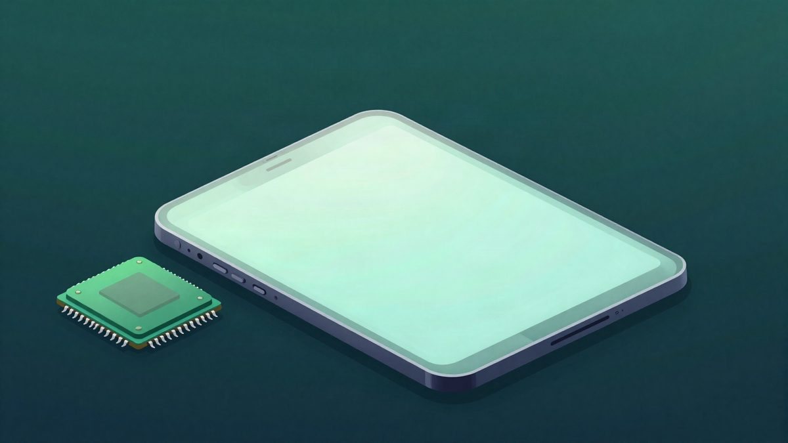
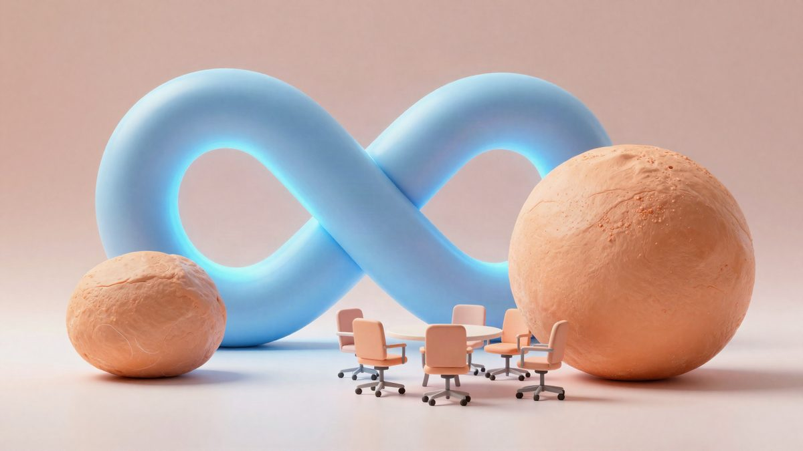

Apple je najavio događaj 28. listopada: prvi MacBook Pro s dodirnim zaslonom i OLED-om

Apple je potvrdio novi event za kraj listopada, a najveća priča je mogući debi prvog MacBook Pro modela s dodirnim zaslonom i OLED panelom. Uz njega se očekuju novi iPad mini s OLED-om, redizajnirano kućište, manja masa i M5 Pro te M5 Max čipovi, pa Apple očito sprema ozbiljan redizajn svog Pro ranga.
Apple je najavio novu posebnu prezentaciju za 28. listopada u 18 sati po našem vremenu (10 sati u Los Angelesu). Događaj će se održati u Los Angelesu pod nazivom "Pro and tell". Najavili su ga Greg Joswiak i direktorica za Veliku Kinu, koja je poručila da "Pro" sadržaj stiže već sljedeći tjedan.
Ovo je Appleov drugi listopadski event. Tvrtka je 13. listopada već predstavila HomeView pametni kućni zaslon, drugu generaciju HomePod minija i novi Apple TV 4K.
Najviše se očekuje novi MacBook Pro, prvi u Appleovoj povijesti s dodirnim zaslonom. Prema dosadašnjim informacijama stigao bi u 14- i 16-inčnoj verziji, pa bi Apple napokon prekinuo dugogodišnju praksu da MacBook prijenosnici nemaju touch ekran.
Tu se promjene ne zaustavljaju. Navodno stiže OLED panel, a trenutni notch mogao bi nestati u korist dizajna nalik Dynamic Islandu s iPhonea. Spominje se i redizajnirano kućište, uz osjetno manju masu od postojećeg modela. Unutra bi trebali biti čipovi M5 Pro i M5 Max.
Uz MacBook Pro na događaju bi se mogao pojaviti i novi iPad mini. Izvor navodi da bi mali tablet s LCD-a mogao prijeći na OLED, dobiti premještenu prednju kameru i redizajniran zvučnički sustav. Cijena i dostupnost za Europu za sada nisu objavljene.
Izvor: MyDrivers (快科技)
Povezani članci

OLED iPad mini 8 navodno stiže s A20 Pro čipom i većom cijenom od 799 dolara25. listopada 2026. iPhone Duo: prvi korisnici prijavljuju puknuća zaslona uz šarku na dan prodaje23. listopada 2026.
iPhone Duo: prvi korisnici prijavljuju puknuća zaslona uz šarku na dan prodaje23. listopada 2026.
Meta od 30. listopada prebacuje odgovornost za greške svog AI-ja na korisnike23. listopada 2026.